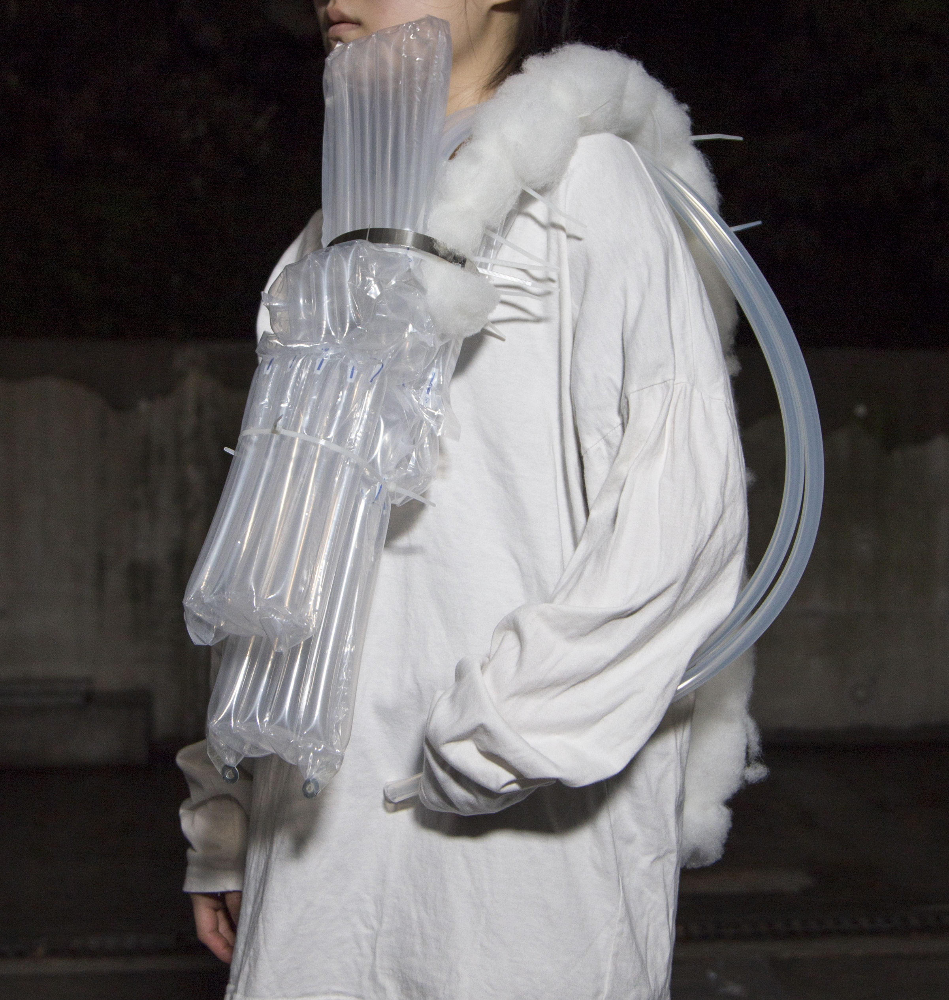
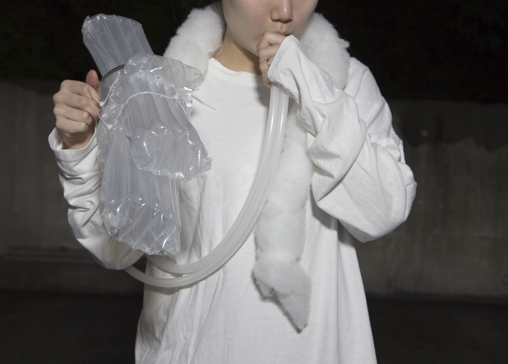

Weight, 단채널 영상, 2’18”, 2020
(우층 상단) 무령, 151.0x40.0x38.0.0cm, 에어팩,와이어, 케이블타이, 의료용 실리콘호스,반투명연질 PVC, 2020
(좌측 하단) 발화하는뱀, 112.5x17.0x13.3cm, 에어팩, 의료용 실리콘호스, 케이블 타이, 파이프 타이, 패딩솜, 2020
(우측 하단) 버리는인형, 92.0x32.0x18.8cm, 에어팩,의료용 실리콘호스, 케이블 타이, 투명PVC, 2020
WEIGHT
물리적 차원을 초월하는 ‘재활’을 위한 제례도구를 제작했다. 재활 행위를 일련의 수행으로 느낀 후 제의적인(ritualistic) 목적을 부여했다. 극단적인 상황에서 붙잡은 미신적인 호소는 재활행위로서 호흡을 바꾼다. 영상 WEIGHT에서는 이를 질량을 통해 드러냈다.
(좌측 상단) Remedial exercise_acupressure, 단채널 영상, 00’27”, 2019
(우층 상단) Remedial exercise_shoulder muscle, 단채널 영상, 00’31”, 2019
(좌측 하단) Remedial exercise_poignet, 단채널 영상, 2’22”, 2019
(우측 하단) Remedial exercise_drop- the- hankerchief, 단채널 영상, 13’19”, 2019
Remedial exercise
운동의 영역으로 분류된 물리적 재활 행위는 정확한 절차가 있는 시퀀스들의 나열이며 반복적인 미동으로 구성된다. 레퍼런스로 사용된 해부학, 생리학, 움직임 전문가로부터 받은 데이터를 아카이브하는 과정에서 발생한 간극을 상상력으로 대체하여 도구와 움직임을 만들었다.
전우경은 소생 혹은 회복을 위한 행위인 ‘재활’의 움직임을 통해 작품의 기능성에 의문을 제기한다.